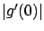

Next: 1.2.1.2 Second-order conditions for
Up: 1.2.1 Unconstrained optimization
Previous: 1.2.1 Unconstrained optimization
Contents
Index
Suppose that  is a
is a
 (continuously differentiable) function and
(continuously differentiable) function and
 is its local minimum.
Pick an arbitrary vector
is its local minimum.
Pick an arbitrary vector
 . Since we are in the unconstrained case,
moving away from
in the direction of
. Since we are in the unconstrained case,
moving away from
in the direction of
 or
or  cannot immediately take us outside
cannot immediately take us outside  .
In other words, we have
.
In other words, we have
 for all
for all
 close enough to 0.
close enough to 0.
For a fixed
, we can consider
 as
a function of the real parameter
as
a function of the real parameter
 , whose domain is some interval containing 0. Let us
call this new function
, whose domain is some interval containing 0. Let us
call this new function  :
:
 |
(1.4) |
Since
is a minimum of
, it is clear that 0 is a minimum of
.
Passing from
to
is useful because
is a function of a scalar variable
and so its minima
can be studied using ordinary calculus. In particular, we can write down the
first-order
Taylor expansion for
around  :
:
 |
(1.5) |
where  represents ``higher-order terms" which
go to 0 faster than
as
approaches 0, i.e.,
represents ``higher-order terms" which
go to 0 faster than
as
approaches 0, i.e.,
 |
(1.6) |
We claim that
 |
(1.7) |
To show this, suppose that
 . Then,
in view of (1.6), there exists an
. Then,
in view of (1.6), there exists an
 small enough so that for
small enough so that for
 , the absolute value of the fraction
in (1.6) is less than
, the absolute value of the fraction
in (1.6) is less than 
. We can write this as
For these values of
, (1.5) gives
If we further
restrict
to have the opposite sign to  , then
the right-hand side of (1.8) becomes 0 and we obtain
, then
the right-hand side of (1.8) becomes 0 and we obtain
 . But this contradicts the fact that
has a minimum at 0. We
have thus shown that (1.7) is indeed true.
. But this contradicts the fact that
has a minimum at 0. We
have thus shown that (1.7) is indeed true.
We now need to re-express this result in terms of the original function
. A
simple application of the chain rule from vector calculus yields the formula
 |
(1.9) |
where
is the gradient of
and  denotes inner product.1.1 Whenever there is no
danger of confusion, we use
subscripts as a shorthand notation for partial derivatives:
denotes inner product.1.1 Whenever there is no
danger of confusion, we use
subscripts as a shorthand notation for partial derivatives:
 . Setting
in (1.9),
we have
. Setting
in (1.9),
we have
 |
(1.10) |
and this equals 0 by (1.7).
Since
was arbitrary, we conclude that
This is the first-order necessary condition for optimality.
A point
satisfying this condition is called a stationary point.
The condition is ``first-order" because it is derived using the first-order
expansion (1.5).
We emphasize that the result
is valid when
 and
is an interior point
of
.
and
is an interior point
of
.
Next: 1.2.1.2 Second-order conditions for
Up: 1.2.1 Unconstrained optimization
Previous: 1.2.1 Unconstrained optimization
Contents
Index
Daniel
2010-12-20